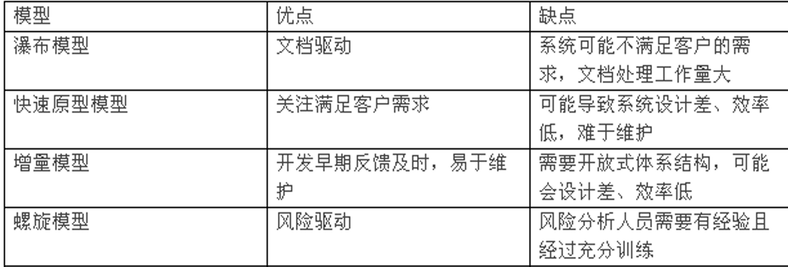

-
软件定义
- 软件是计算机系统中由一系列按照特定顺序组织的指令、数据和相关文档组成的集合
-
软件危机的定义 表现 原因
- 软件危机的定义：软件危机是指在计算机软件的开发和维护过程中所遇到的一系列严重问题
- 表现
- 对软件开发成本和进度的估计常常很不准确
- 经常出现用户对 “已完成的” 软件系统功能不满意的现象
- 软件产品的质量往往达不到要求
- 软件通常不可维护
- 软件通常没有适当的文档资料
- 软件成本在计算机系统总成本中所占的比例逐年上升
- 软件开发生产率提高的速度，远远跟不上计算机应用迅速普及深入的趋势
- 原因
- 软件缺乏 “可见性”
- 软件缺乏 “可插拔性”
- 保证每个人完成的工作构成一个高质量的大型软件系统，是一个极端复杂困难的问题
- 忽视需求分析只重视编码与运行
- 忽视文档只重视程序
- 轻视维护是一个最大的错误
-
软件工程定义、工程方法学三要素
- 软件工程定义：把系统的、规范的、可度量的途径应用于软件开发、运行和维护过程；研究系统的、规范的、可度量的途径
- 软件工程方法学包含 3 个要素：方法、工具和过程
-
软件工程七原理
-
用分阶段的生命周期计划严格管理
-
坚持进行阶段评审
-
实行严格的产品控制
-
采用现代程序设计技术
-
结果应能清楚地审查
-
开发小组的人员应该少而精
-
承认不断改进软件工程实践的必要性
-
-
软件生命周期三大阶段八小阶段
- 三大阶段：问题定义阶段、可行性研究阶段和需求分析阶段
- 八小阶段：问题定义 可行性研究 需求分析 总体设计 详细设计 编码和单元测试 综合测试 软件维护
-
常见的软件开发模型有哪些？各有什么特点、优缺点？
- 瀑布模型
- 阶段间具有顺序性和依赖性
- 推迟实现
- 质量保证
- 快速原型模型
- 快速建立一个能反映用户主要需求的原型系统，让用户在计算机上试用它，通过实践来了解目标系统的概貌
- 增量模型
- 能在较短时间内向用户提交可完成部分工作的产品
- 逐步增加产品功能可以使用户有较充裕的时间学习和适应新产品
- 螺旋模型
- 螺旋模型以风险管理为核心，兼顾用户反馈和迭代开发，是一种灵活且具有较高可靠性的开发方法，适合高复杂度、高风险的项目开发
- 
- 瀑布模型
-
可行性研究的基本任务是什么？
- 用最小的代价在尽可能短的时间内确定问题是否能够解决
-
可行性研究有哪三个角度？
- 技术 经济 操作
-
可行性研究结束后的文档是什么？
- 可行性研究报告
-
系统流程图、数据流图、数据字典各是描绘系统的什么模型？
- 物理模型 数据流图和数据字典共同定义了系统的逻辑模型
-
软件开发成本估计有哪三种方法？
- 自顶向下估算法
- 自底向上估算法
- 类比估算法
-
经济效益分析有哪几个经济指标？
- 货币的时间价值
- 投资回收期
- 纯收入
- 投资回收率
-
需求分析的基本任务是什么？
- 准确地回答 “系统必须做什么”
-
需求分析结束提交的文档叫什么名字？
- 软件需求规格说明书
-
需求分析的任务有哪些？
- 确定对系统的综合要求
- 分析系统的数据要求
- 导出系统的逻辑模型
- 修正系统开发计划
-
需求分析阶段，系统的综合要求需求有哪些
- 功能需求
- 性能需求
- 可靠性、可用性、安全性、保密性等需求
- 出错处理需求
- 接口需求
- 约束、逆向需求
- 将来可能提出的要求
-
软件设计从技术的角度有哪三种内容？从管理的角度分为哪两种阶段？
- 从技术的角度：数据设计 系统结构设计 过程设计
- 从管理的角度：总体设计 详细设计
-
总体设计有哪两个任务？
- 划分出组成系统的物理元素
- 设计软件的结构
-
总体设计阶段提交的文档叫什么？
- 总体设计说明书
-
设计原理有哪些？
- 模块化
- 抽象
- 逐步求精
- 信息隐藏和局部化
- 模块独立
-
Miller 法则：一个人在任何时候都只能把注意力集中在多少
个知识块上？- （7±2）个知识块
-
模块的独立程度的两个定性标准度量是什么？
- 内聚和耦合
-
三种基本的程序控制结构是什么
- 顺序结构 选择结构 循环结构
-
程序编码风格是什么？包括哪些方面？
- 编写程序时所表现出来的特点、习惯、逻辑思路等
- 符号名的命名 程序的注释 数据说明 语句构造 输入输出 效率
-
测试有哪三个阶段，有哪两种方法？
- 单元测试 集成测试 系统测试
- 黑盒测试：又叫功能测试 白盒测试：又叫结构测试
-
软件生存周期中时间最长的一个阶段是？
- 维护阶段
-
软件维护的内容有哪四种？
- 改正性维护
- 适应性维护
- 完善性维护
- 预防性维护
-
用例图、类图、时序图的作用是什么？有哪些主要的元素？
-
作用：建立功能模型 建立静态模型 强调消息的时间次序
-
用例图
-
参与者：外部交互实体，如用户或其他系统
-
用例：系统的具体功能
-
系统边界：用矩形框划定系统范围
-
关系：
-
关联关系
-
包含关系
-
扩展关系
-
泛化关系
-
-
备注：补充说明
-
-
类图
- 类：类名、属性、方法
- 接口：方法集合
- 关系：关联、依赖、泛化、实现、聚合、组合
- 多重性：表示关联的实例数量
- 可见性：定义属性和方法的访问权限
-
时序图
- 角色和对象：表示交互的实体
- 生命线：表示对象的生命周期
- 控制焦点：表示对象的活动状态
- 消息：表示对象之间的交互行为（包括同步、异步、返回消息等）
- 条件与循环：表示控制逻辑
- 备注：提供额外的信息说明
-